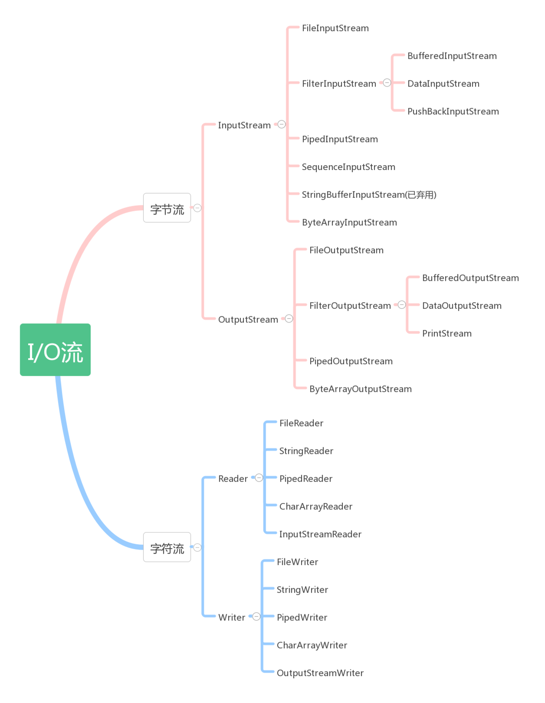

Java IO
Java IO主要是指Java中输入、输出操作。Java的IO机制是基于数据流进行输入输出的，数据流是一组有序，有起点和终点的字节数据序列。
Java IO的类型
根据流的流向可以分为输入流和输出流，根据处理单位又可以分为字节流和字符流。
| ~ | 字节流 | 字符流 |
|---|---|---|
| 输入流 | InputStream | Reader |
| 输出流 | OutputStream | Writer |
InputStream、OutputStream及Reader、Writer类是java.io包下的基类，实际处理流的类都是由这四个类派生而来。 